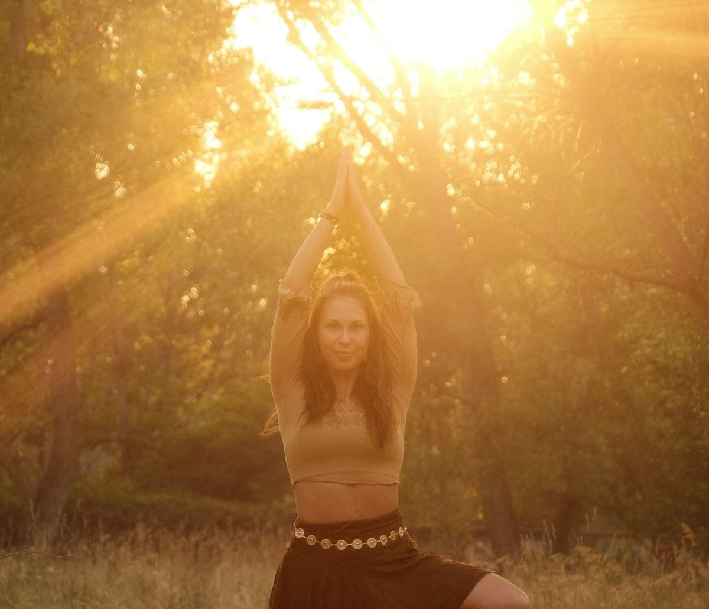
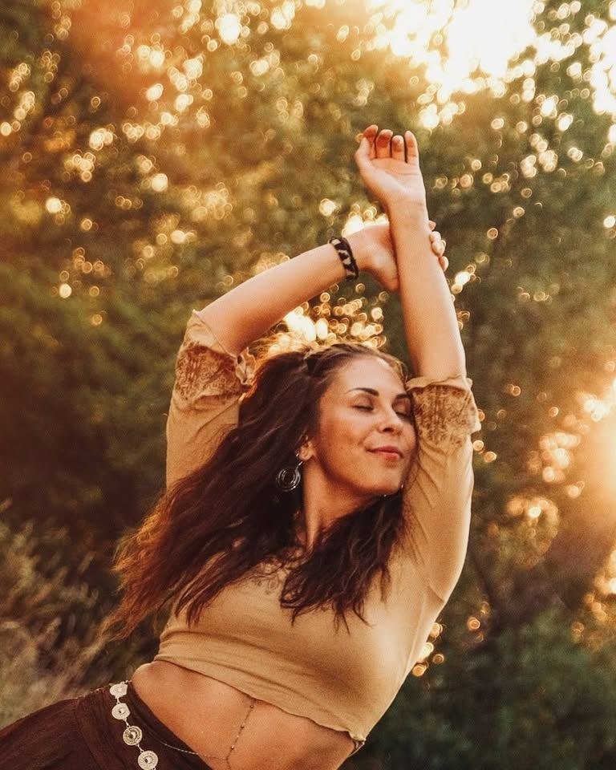
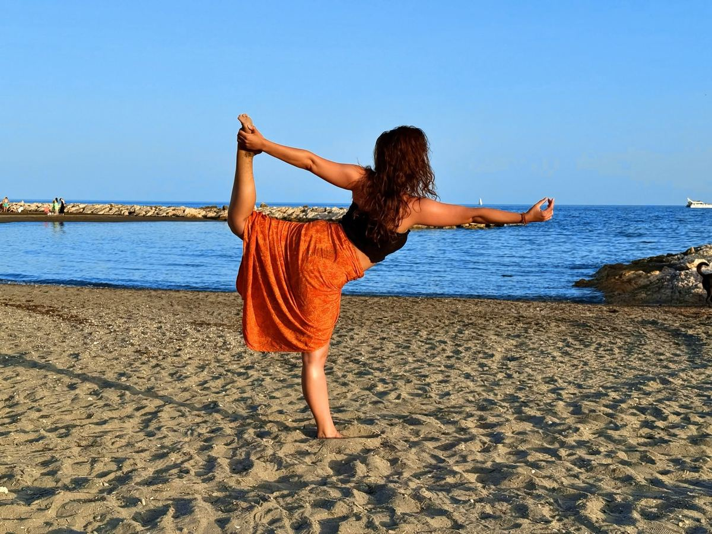
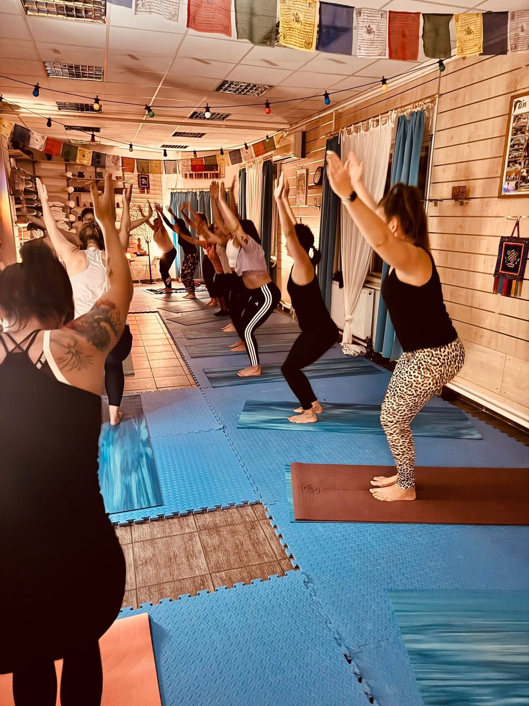
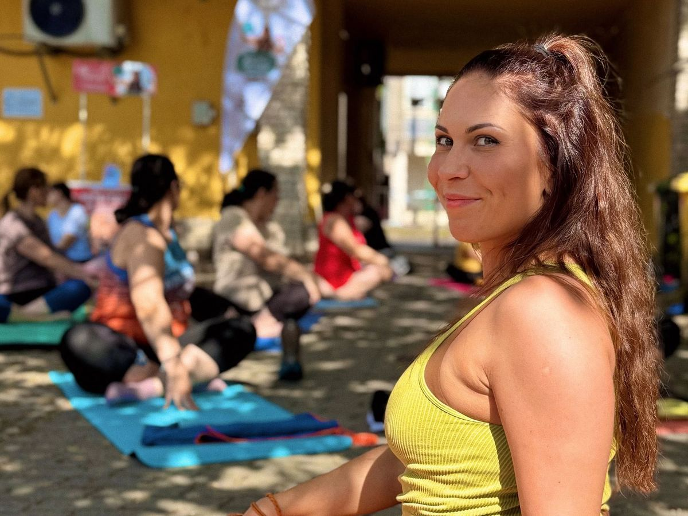
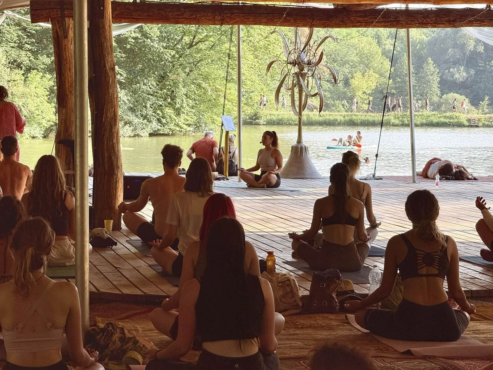
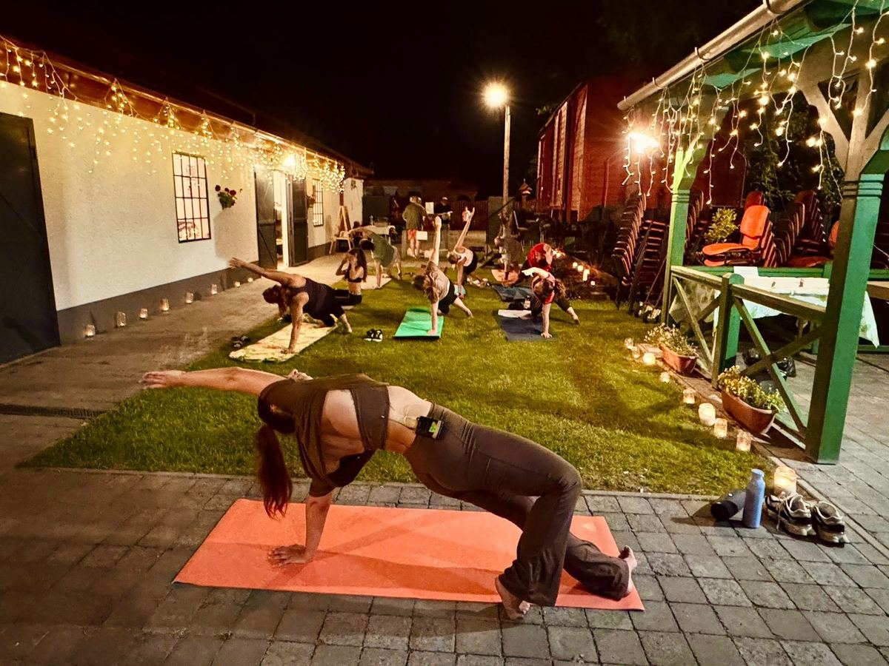
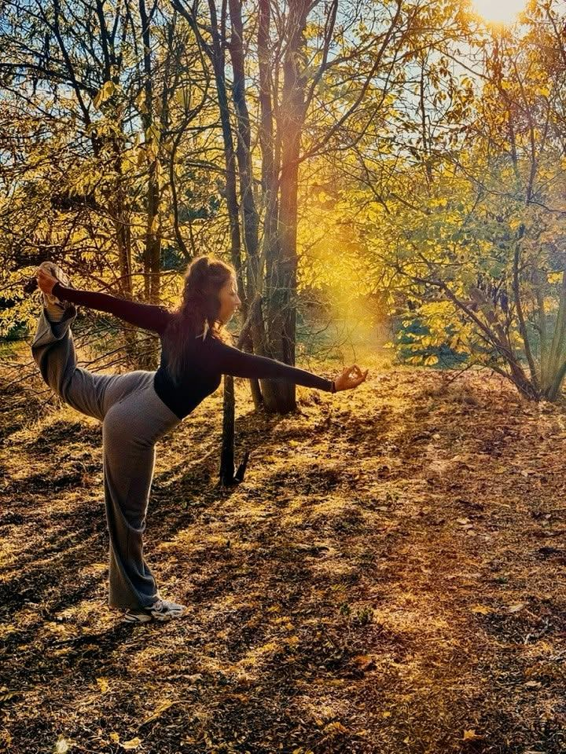
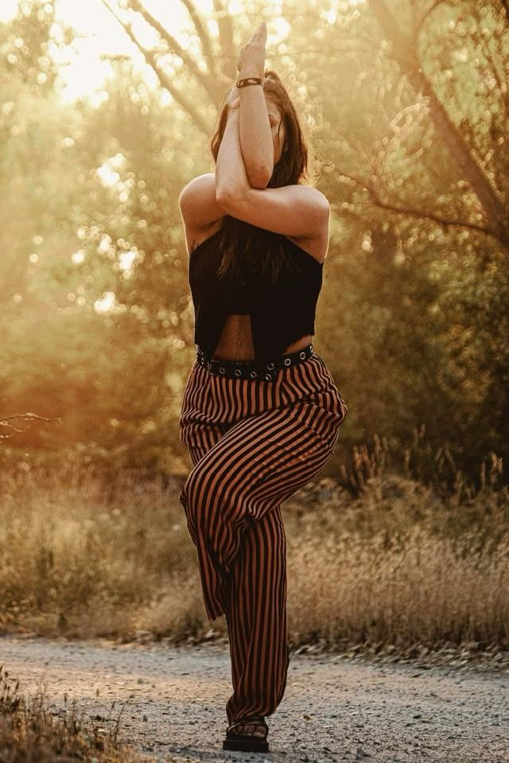
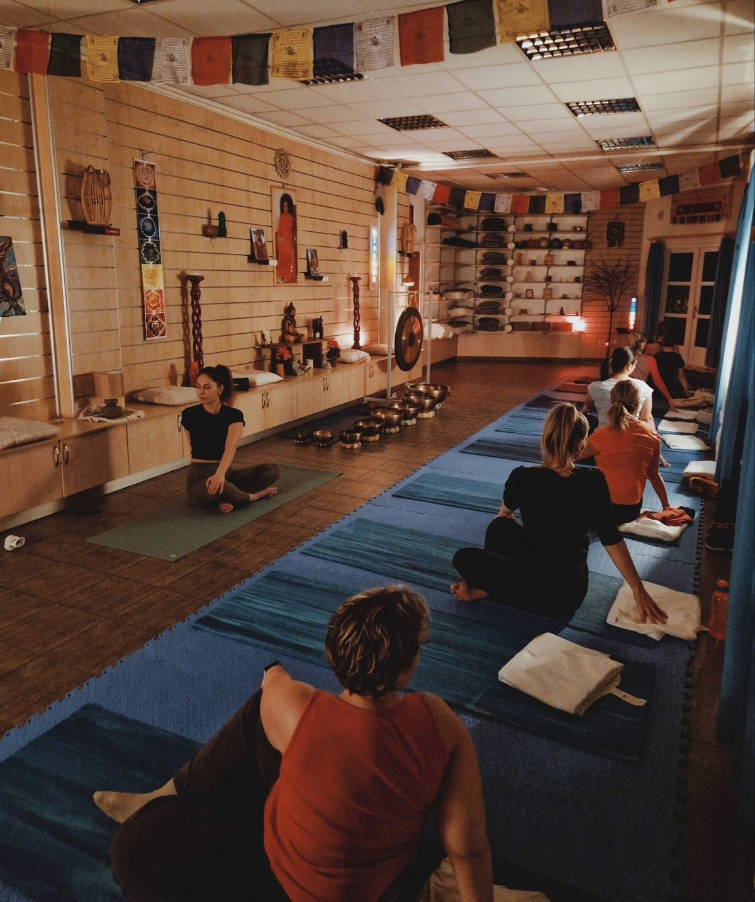

Drop-in class
$25
per class
- Any group class
- In person or online
New in Fort Myers Group flows, private sessions at your home or on the beach, and yoga for teams.
Hatha flow · Slow flow · Private yoga
Dynamic yet gentle hatha flow classes with Olivia Kovács — group classes, private yoga at your home, lanai or on the beach, and yoga for teams across Southwest Florida.

Olivia Kovács Certified hatha yoga teacher · Budapest → Fort Myers
Certified hatha yoga teacher since 2023
Meet your teacher
I'm Olivia, a hatha flow teacher trained in Budapest and now teaching in Fort Myers. My classes won't ask you to stand on your hands. They'll ask you to breathe, to notice, and to move with a little more ease than you walked in with.
Every class weaves together breathwork, strength, stretching, balance, a real flow state and an unhurried relaxation at the end. Complete beginners are welcome, and people who have practiced for years still find a challenge.
Most of my students aren't chasing the perfect pose. They come between work, kids, grandkids, golf and gardening — and leave saying things like “I needed that,” “I've finally landed” or “I'm going to sleep so well tonight.” That's the whole point.
Awareness
I notice. I see. I observe. I allow — and then I respond.
Control
I want to steer it. I grip it, regulate it, push it down.
Seven ways in
Breathwork, strength, stretching, balance, a real flow state and a long relaxation — in every class. Choose the pace that suits you today.
What “hatha” means
Hatha yoga balances the active and the receptive in us: effort and ease, strength and surrender. When that balance tips, we feel it first as tension or restlessness.
On the mat we use the body to find the balance again. The poses are a doorway to meditation — a more dynamic doorway — and only one of the eight limbs of yoga.
Private yoga
Private yoga in Fort Myers is built around one body: yours. We talk about how you move, where you hold tension and what you want to feel afterwards — then I plan the class for exactly that.
No driving, no parking, no crowd. Just room for a mat and a little quiet.
Sunrise or sunset on the sand at Fort Myers Beach, Sanibel or wherever your towel is.
A regular class for your community, paced for your residents.
Live, one-on-one, from wherever you are — with the same attention to detail.

Timetable
Book in a minute. Beginners are welcome in every class.
Private sessions only — ask for a time
Private sessions only — ask for a time
Private sessions only — ask for a time
Try it now · 30 seconds
Four counts in, six counts out. A longer exhale is the quickest way to tell your nervous system it's safe to slow down.
Prices in USD
Pay per class, save with a pass, or give someone a gift card.
$25
per class
$110
per pass
$95
60 minutes
$425
per pack
Custom
quote
FAQ
The question everyone asks first — and a few others.
You don't need to be flexible to start yoga — flexibility is something the practice builds. My classes are for people who, between work, family, grandkids, gardening and everything else, are perfectly happy with “that felt good,” “I've landed,” “I'm going to sleep so well” or “my back doesn't hurt anymore.”
We won't be practicing handstands. Classes are varied and there's always a little challenge in them, but nothing is compulsory.
Beginners are warmly welcome, especially if movement is already part of your life in some way. Slow Flow is the gentlest place to start; Hatha Flow is stronger and more dynamic. If you'd like to learn the foundations first, one or two private sessions are a great way in.
Everyone finds something different hard. For some it's the strength work, for others the stretching or the balance — and for some, switching off their thoughts for an hour.
Hatha Flow is the stronger, more dynamic class. Slow Flow puts more emphasis on observation, at a slower pace. Both include a flow experience, which for me is the most beautiful part of yoga. Sometimes I hold strengthening poses a little longer so everyone's attention can arrive.
Comfortable clothes you can move in, a bottle of water, and your own mat if you have a favorite. If you need to borrow one, mention it when you book. We practice barefoot. For beach sessions, bring a large towel or a mat, and sun protection.
Events
Special classes where handpan, tongue drum or singing bowls lead the movement.
Sample listing so you can see the layout. Real events will be announced here and on Instagram first.
@oliivia_yoga
Studio flows, garden classes, festival pavilions and the sea. Every class looks a little different; the feeling afterwards is the same.






Southwest Florida
Group classes in Fort Myers; private sessions at homes, clubhouses, offices and beaches across Southwest Florida.
Journal

What happens in a private yoga session, who it helps most, and how to get the most out of practicing one-on-one at home, on your lanai or on the beach.
Read
Both classes include breath, strength, stretching, balance and relaxation. Here is how they differ — and how to choose between them.
ReadPractical tips for practicing yoga on the sand in Southwest Florida — timing, heat, tides, what to bring and how to make the most of it.
ReadTry a group class, book a private session, or just send a question. Beginners very welcome.